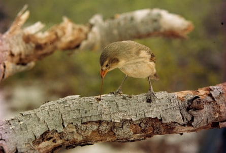

W hen the first of the Galápagos Islands arose from the ocean floor around 3m years ago, they were naked, angry, lava-spewing cones devoid of life. Now, millions of years later, they are alive with some of the world’s most iconic animals. Giant tortoises. Sea iguanas. Flightless cormorants. And those finches equipped with Swiss army knife beaks.
The Galápagos finches are probably one of the most well-known examples of evolution and will forever be tightly linked to Charles Darwin’s voyage and his theory of natural selection (although you may be surprised to learn that the Galápagos finches were not as central to Darwin’s theory as we like to think). With their diversity of bill sizes and shapes, each species has adapted to a specific type of food; the ground-finch ( Geospiza ) has a thick beak adapted to feeding on a variety of crunchy seeds and arthropods, whereas the warbler finch ( Certhidea olivacea ) developed a slender, pointy bill to catch tasty insects hiding between the foliage. The woodpecker finch ( Camarhynchus pallidus ) even uses twigs or cactus spines to pry arthropods out of treeholes.
The tool-using woodpecker finch probes a branch with a cactus spine on Plaza Island, Galápagos Islands, Ecuador.Photograph: James L. Stanfield/NG/Getty Images
The Galápagos finches are seen as a classic example of an adaptive radiation, the rapid evolution of ecologically different species from a common ancestor. Comparisons of anatomical features of the Galápagos finches, as well as modern molecular techniques, show they are indeed more closely related to each other than to any other species. This means they form a monophyletic group, a group of organisms all descended from one ancestral species. Based on the accumulated differences that occurred in their DNA over time (a way of estimating when species split from each other), the ancestral flock likely reached the Galápagos about 2-3m years ago (Grant and Grant, 2008). What did those very first finches look like? And where did they come from?
Although many of the Galápagos Islands themselves are several million years old, the oldest known fossil remains of Galápagos finches come from the Holocene period (the last 10,000 years) (Steadman et al, 1991). These fossils are from two species of ground-finches, Geospiza nebulosi and G magnirostris , that are still living on the islands today. They thus tell us little about what the earliest finches looked like and where they might have come from.
Because of the islands’ close proximity to Ecuador, scientists have looked towards mainland South America in their search for the ancestor of the Galápagos finches. The avian palaeontologist David Steadman argued, based on morphological and behavioural similarities (1982), that the blue-back grassquit Volatinia jacarina , a small tropical bird common throughout much of Central and South America, was the most likely direct ancestor of the Galápagos finches. Later studies, such as that of Sato et al. (2001), started using mitochondrial DNA and found that another species of grassquit, Tiaris obscura, was the most likely ancestral species. This species originated in Central America, but spread into South America as the Isthmus of Panama, the land bridge between North and South America, formed around 3m years ago. From South America, it made its way to the archipelago.
However, others have argued, based on similarities in morphology as well as behaviour, that the Galápagos finches are more closely related to Caribbean species of Tiaris or the Saint Lucia black finch Melanospiza richardsoni (Baptista and Trail, 1988). This possibility of a Caribbean origin of the Galápagos finches was also corroborated by a recent analysis (Funk and Burns, 2018). In this analysis, the majority of species most closely related to the Galápagos finches were found to have their ancestral range in the Caribbean. However, the analysis was not conclusive, and there remains an equal probability of a Caribbean origin or a South American mainland origin to the Darwin’s finch radiation.
A Caribbean origin of the Galápagos finches seems counterintuitive, as the nearest mainland from the Galápagos is South America, but dispersal does not always follow a straight line. This is nicely demonstrated by the finch that inhabits nearby Cocos Island, Pinaroloxias inornata . Although this island is closer to the mainland than the Galápagos Islands themselves, genetic research has shown that the Cocos Island finch descended from a Galápagos species, not a mainland one (Grant and Grant, 2008).
Birds are excellent long-distance dispersers, even over open ocean, as demonstrated by the repeated colonisation of the Hawaiian Islands and New Zealand. Moreover, other Galápagos birds, such as mockingbirds and the Galápagos flamingo, exhibit similar Caribbean connections, indicating that a Caribbean origin is plausible. Remarkably enough, this pattern has also been found in other animal groups, such as snakes, moths and sponges (Grehan 2001). Thus the Caribbean remains as a likely source for the origin of Galápagos finches.
Although the lack of fossils means that we don’t know much about the appearance of the first finches, we can narrow down their area of origin. The closure of the Panama land bridge altered ocean circulation, and probably brought about changes in wind strength and directions. These changes may have facilitated the colonisation of the Galápagos Islands, especially if that area was the point of departure for a flock of adventurous finches.
References:
Baptista, LF, and Trail, PW, 1988. On the origin of Darwin’s finches. The Auk.
Funk, ER, and Burns, KJ, 2018. Biogeographic origins of Darwin’s finches (Thraupidae: Coerebinae). The Auk .
Grant, PR, and Grant, BR, 2008. How and Why Species Multiply: The Radiation of Darwin’s Finches. Princeton University Press, Princeton, NJ, USA.
Grehan, J, 2001. Biogeography and evolution of the Galápagos: Integration of the biological and geological evidence. Biological Journal of the Linnean Society .
Sato, A, et al., 2001. On the origin of Darwin’s finches. Molecular Biology and Evolution .
Steadman, DW, 1982. The origin of Darwin’s finches (Fringillidae, Passeriformes). Transactions of the San Diego Society of Natural History.
Steadman, DW, et al., 1991. Chronology of the Holocene Vertebrate Extinction in the Galápagos Islands. Quaternary Research .